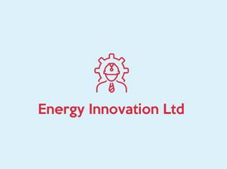
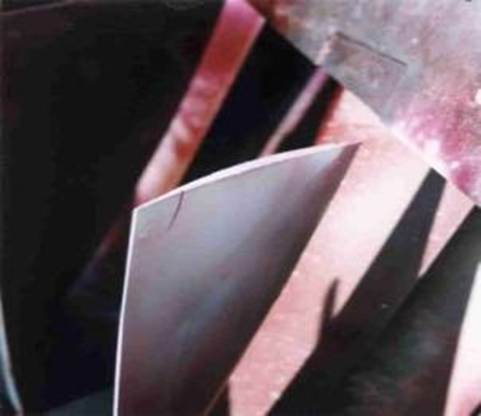
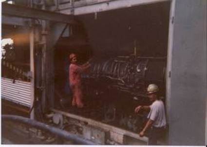

Power Plant Engineering
Energy Innovation Ltd offer Design, Project Management and Consultancy Services for power plant equipment specification, design, installation, commissioning, overhaul, and upgrade. CONTACT US for further details.

We provide the following services;
o Project Management
o Mechanical Installation
o Commissioning
o Maintenance
We provide consultancy services on all levels of industrial gas turbine maintenance including;
o Gas Turbine Combustion Inspection
o Gas Turbine Hot Gas Path Inspection
o Gas Turbine Major Overhaul
o Independent evaluation of gas turbine hot gas path parts and repair option and upgrade recommendations
o Spare parts Inventories - Evaluation of optimum levels for desired mode of operation.
o Independent performance testing of gas turbine unit after upgrade.
We provide Technical Advice on the installation, commissioning and maintenance of aeroderivative gas turbines including;
o Complete gas turbine engine change-out
o Power turbine change-out
o Technical advice on mechanical drive and generator drive turbine applications

We are specialists in industrial and aeroderivative gas turbines
.